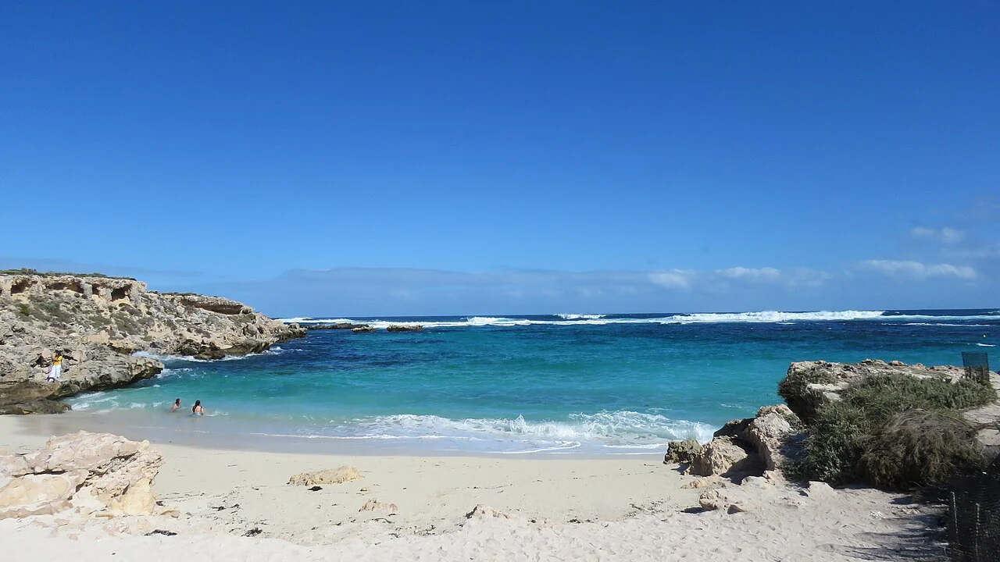

Rottnest Island — Wadjemup
Australie-Occidentale · snorkeling, plongée, kayak

Au large de Perth, Wadjemup — Rottnest Island — rassemble plages, baies et récifs. Une escale australienne à préparer autour du snorkeling, de la plongée ou du kayak.
- Lieu
- Australie-Occidentale
- Niveau
- Variable selon les conditions
- Activités
- snorkeling, plongée, kayak
- Type d'eau
- Mer / océan
- Coordonnées
- -32.01, 115.52 (position approximative du secteur)
Ouvrir dans Ocean Buddy Télécharger sur l'App Store
Source : Tourism Australia.